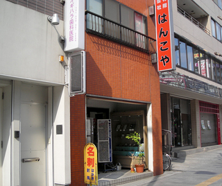
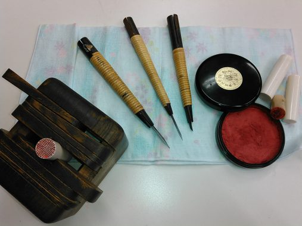

お問い合わせ

印章．ゴム印の製造並びに販売を営 んでおります。 実印・認印・ゴム印・表札・名刺 も取り扱っています。 国家検定1級技能士のお店。 「丁寧」・「早く」を・・・お客 様のご希望に応える よう頑張っているおみせです。

個性的なマイ印鑑を一緒に作りましょう
手書きの版下による手仕上げの印鑑。お客様と一緒に考案した オリジナルデザインもOKです！
ご来店をお待ち申し上げております。

 お問い合わせ
お問い合わせ